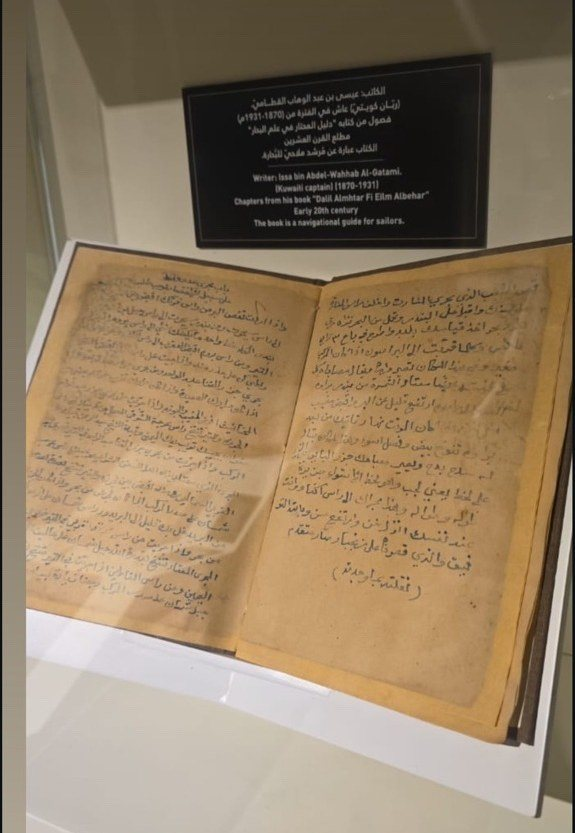
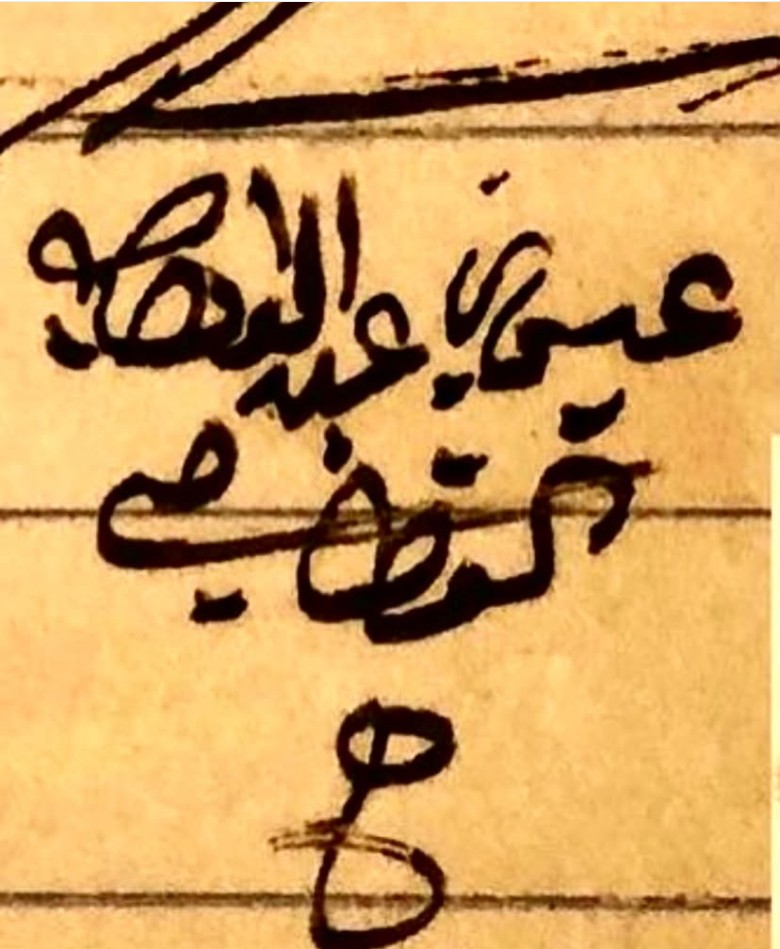
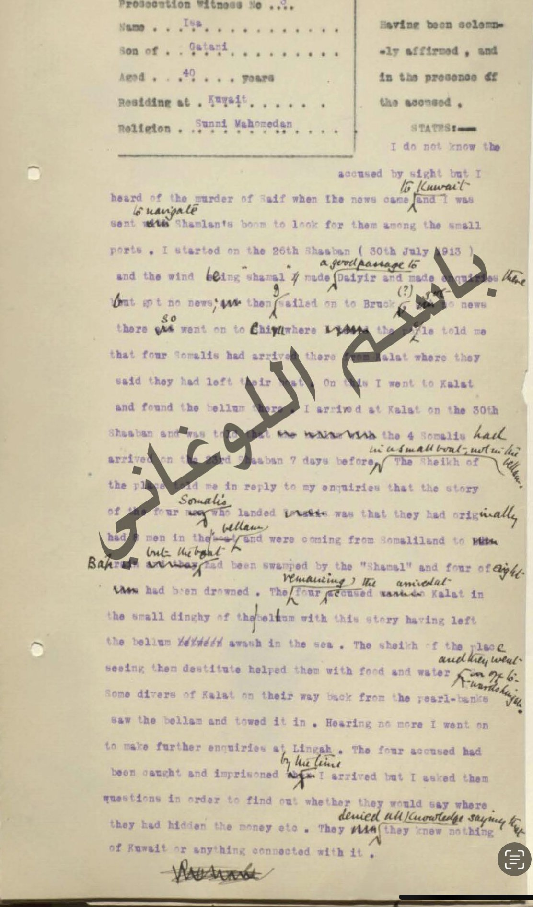

١٨٧٠ إلى ١٩٢٩
عيسى بن عبدالوهاب، نوخذة الكويت الأول
يصف الحجي عيسى بأنه «نوخذة الكويت الأول وقبطانها الكبير». ولد في الكويت عام ١٢٨٧هـ (١٨٧٠م)، وعمل أولا «معلما» يحدد مواقع السفينة للنوخذة المعروف أحمد بن ناصر، ثم قاد بغلة للعبدالجليل قبل الحرب العالمية الأولى. وفي حدود عام ١٩١٢ اشترى سفينة هندية من نوع الكوتية وقادها إلى براول وخورميان وكراتشي، وامتلك بوما يعرف باسم «الحصان»، وقاد إحدى سفن آل صادق سنوات قبل أن يترك سفينته لابنه عبدالوهاب.
وفي عام ١٣٣٤هـ (١٩١٦م) ألف كتابه «دليل المحتار في علم البحار» في المجاري الرئيسية إلى الهند واليمن وساحل أفريقيا الشرقي، مع خطوط الطول والعرض للموانئ وشرح استخدام «الكمال» لتحديد موقع السفينة في عرض البحر. وطبعه في بغداد عام ١٣٤٢هـ (١٩٢٤م)، فكان كثير من نواخذة الخليج يحملون نسخة منه في صناديقهم. وعده آلن فاليرز عملا يوازي في فائدته كتاب الرحالة اليوناني القديم عن البحر الأريتري. كما ألف «المختصر الخاص للمسافر والطواش والغواص» عام ١٣٤٣هـ (١٩٢٥م)، وكتابا في أوزان اللؤلؤ، وبحثا عن عمان والجبل الأخضر، وكتابا في اللهجات.
وكانت معارف الملاحة في تلك السنين تنتقل باليد، إذ يذكر كتاب المعالم أن النوخذة شعيب بن عبدالسلام نسخ في رجب ١٢٩٢هـ (١٨٧٥م) مصنفا ملاحيا يعود للسيد إبراهيم بن محمد بن غانم الغانم، خال عيسى ومعلمه. وقال الأديب محمد بن ملا حسين التركيت في مقابلة تلفزيونية إن كتاب شعيب المخطوط تداوله النواخذة، وإن عيسى بن قطامي استقى منه بعض ما في كتابه، «وكانوا قديما لا يذكرون المصادر في مصنفاتهم»، وقد غرق ذلك المخطوط مع السفينة التي كانت تحمله.
وعُرف عيسى بلقب «ملاح الكويت». ويذكر عبدالله خالد الحاتم في مقدمة كتابه «من هنا بدأت الكويت» «عمالقة البحر ومنهم البحار البارع عيسى عبدالوهاب القطامي صاحب كتاب دليل المحتار» شاهدا على ما كانت تزخر به الكويت الصغيرة من أهل العلم. وتسمي الطبعة الإنجليزية لكتاب فاليرز «أبناء السندباد» الصادرة عام ٢٠٠٦ كتابه «دليل الكويت البحري»، وأعادت مطبعة حكومة الكويت طبعه عام ١٩٧٦.
وفي عام ١٩١٣، بعد أن قتل بحارة صوماليون الطواش سيف بن علي بن سيف في سفينته وفروا، سافر عيسى ومعه ابنه عبدالوهاب يبحث عنهم في موانئ الخليج حتى قبض عليهم في لنجة، ولا تزال إفادته في القضية محفوظة. وكان شاعرا بارعا في الموال، صديقا للشيخ عبدالعزيز الرشيد، وراعيا لصديقه الشاعر الضرير صقر بن سالم الشبيب. وفي عام ١٣٤٦هـ (١٩٢٧م) ترك الكويت واستقر في مسقط، وتوفي فيها عام ١٣٤٨هـ ودفن تحت جبال مسقط وقبره لا يزال هناك، وبلغ خبر وفاته ابن أخيه عبدالوهاب بن عبدالعزيز حين وصل مسقط على البغلة «البدري».




وثائق هذا الجزء
- توقيع النوخذة عيسى القطامي على رسالته إلى بومبي سنة ١٩٠٢
- عيسى بن قطامي النوخذة الملاح في دفاتر المتروك
- شهادة النوخذة عيسى بن قطامي في قضية مقتل سيف بن سيف
- عيسى بن عبدالوهاب يشتري بيتا في فريج ابن خميس، وما آل إليه
المصادر
- الحجي، نواخذة السفر الشراعي، ص ٤٢ إلى ٤٦
- يوسف محمد صقر الجاسر الغانم، آل زايد: تاريخ ورجال، ٢٠٠٦، ص ٢٦ و٢٧
- إفادة عيسى بن قطامي، ١٩١٣، نشرها بسام اللوغاني في جريدة الجريدة، ٢ نوفمبر ٢٠١٨
- عبدالله خالد الحاتم، من هنا بدأت الكويت، المقدمة
- وليم فيسي ويعقوب الحجي وغريس بنديك، مقدمة كتاب آلن فاليرز «أبناء السندباد»، دار أرابيان ببليشنغ، لندن، ٢٠٠٦
- معالم مدينة الكويت القديمة، الجزء السابع، ص ٤٣، الحاشية ١٩
- وانظر صفحة الكتب لمؤلفات عيسى
- معالم مدينة الكويت القديمة، الجزء الرابع، في الحديث عن النوخذة شعيب بن عبدالسلام، نقلا عن رسالة الكويت العدد ٥٢ وعن محمد بن ملا حسين التركيت في برنامج صفحات من تاريخ الكويت